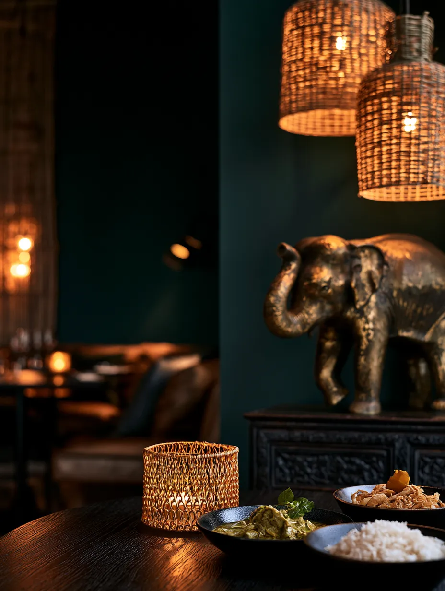
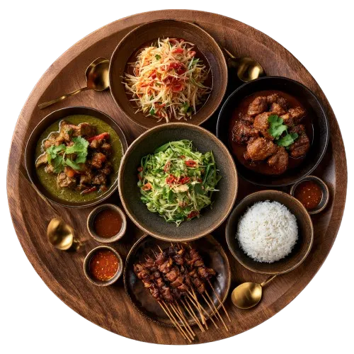
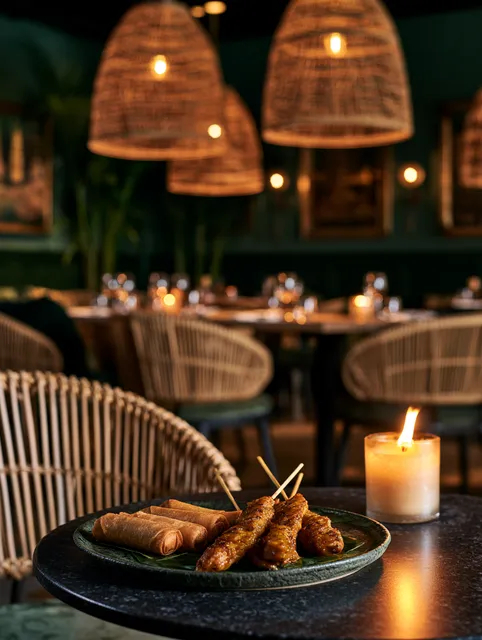
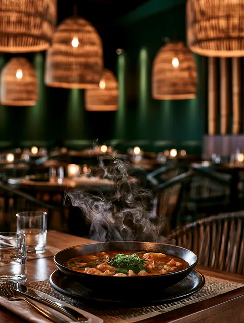
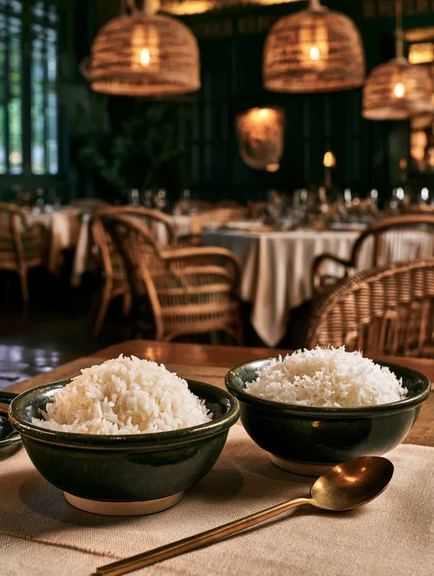
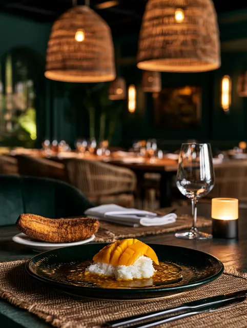
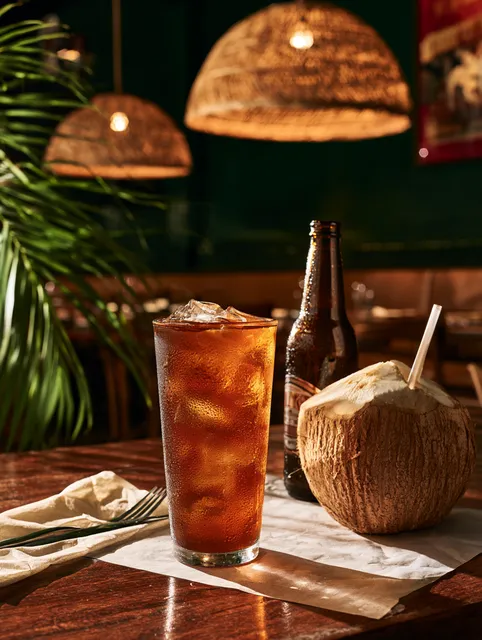
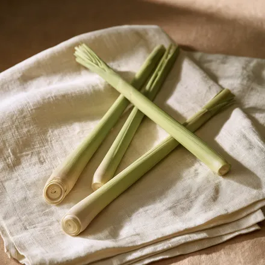
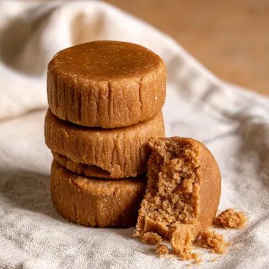

Galgant
ข่า
Sieht aus wie Ingwer, schmeckt harziger und kaum scharf.
sa·bai Adjektiv, thailändisch wohlig entspannt ohne Eile
Currys, die zwei Tage ziehen. Wok bei voller Flamme. Und Schärfe, die du selbst bestimmst.


Ein Gericht pro Person, dazu Reis
Bei uns bestellt nicht jeder für sich. Alles kommt auf den Tisch, jeder nimmt sich.
Mischt scharf und mild
Ein Curry, ein Salat, etwas aus dem Wok. Das Zusammenspiel macht es aus, nicht das einzelne Gericht.
Der Reis ist die Hauptsache
Essen gehen heißt auf Thai kin khao, also Reis essen. Alles andere ist streng genommen Beilage.
Nachwürzen gehört dazu
Chili in Fischsauce, Zucker und Essig stehen auf dem Tisch. Damit stellt sich jeder sein Gericht selbst ein.





Galgant
ข่า
Sieht aus wie Ingwer, schmeckt harziger und kaum scharf.

Zitronengras
ตะไคร้
Gibt die Frische. Wird mitgekocht, aber nicht mitgegessen.
Limettenblatt
ใบมะกรูด
Der Duft, den man sofort mit Thai verbindet.
Fischsauce
น้ำปลา
Steht bei uns statt Salz. Riecht kräftig, schmeckt rund.

Palmzucker
น้ำตาลปี๊บ
Karamellig. Bringt Schärfe und Säure ins Gleichgewicht.
4,8
★★★★★
218 Bewertungen
bei Google
Das Tom Yum schmeckt wie in Bangkok. Endlich fragt jemand nach, wie scharf ich es wirklich will.
Nina B. · vor 2 Wochen
Wir waren zu viert und haben alles geteilt, genau wie es auf der Seite steht. War großartig.
Tobias R. · vor 1 Monat
Massaman mit Rind, dazu ein Chang. Ruhiger Laden, freundlich, faire Preise.
Yasmin K. · vor 3 Wochen
Der Papayasalat ist wirklich scharf, nicht auf deutsch scharf. Endlich.
Jonas M. · vor 5 Wochen
Haben uns beraten lassen und drei Gerichte für den Tisch bestellt. Kommen wieder.
Sarah L. · vor 2 Monaten
Heute bis 22 Uhr geöffnet
Musterstraße 14, 38100 Braunschweig
0531 / 000 000 ·
hallo@sabai-sabai.de